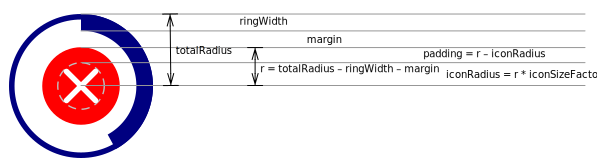

Some selected previews of the examples (shown in detail further down in this document):
0 % 5 % 25 %
80 % 100 % 42 % 42 % 42 % 42 % 42 % 42 % 42 %
To use these content plug-ins, in addition to jQuery and jquery-progresspiesvg-min.js
also include the additional plug-in file jquery-progresspiesvg-controlIcons-min.js into
your HTML!
$(".pr.icon").each(function(){
var me = $(this);
me.progressPie({
color: "#00d",
strokeWidth: 1,
ringWidth: 3,
contentPlugin: me.hasClass("play") ? "play" : me.hasClass("pause") ? "pause" : "stop"
});
});<span class="pr icon stop">100</span> %0 % 5 % 25 % 42 % 50 % 65 % 80 % 99 % 100 %
Normally the icon is drawn in the same color as the outer ring and is auto-sized to fit into the ring.
If you want to get a smaller icon (especially when drawing greater pie/ring charts), you may add
a maxSize option to the content plug-in options. If you want to override the color, add a color
option. All these content plug-in options are members of an object passed to the progressPie plug-in in option
contentPluginOptions:
$(".pr.silverback").progressPie({
size: 30,
strokeWidth: 15,
ringWidth: 2,
strokeColor: "#ddd",
color: "#d00",
valueData: "val",
contentPlugin: "pause",
contentPluginOptions: {
color: "navy",
maxSize: 7
}
});
The content plug-ins are primarily designed to put content into the blank space of a ring graph like in the examples above. But in principle it's also possible to combine it with a progress pie graph. In the latter case keep in mind, the content is drawn as a layer on top of the pie graph. If you keep the default color (which is exactly the same as that of the pie), part of the icon will be effectively invisible. So this combination requires you to manually set a color scheme where the content color (here: the control icon) is drawn in a (foreground) color which is well readable on top of the background color (e.g. white) as well as on top of the pie color (e.g. a light grey):
$(".pp.icon").progressPie({
color: "#ccc",
valueData: "val",
contentPlugin: "pause",
contentPluginOptions: {color: "navy"}
});
Comparing this to the first example, you might have noticed that in this case the control icons are larger: The default icon size when combined with a ring graph is calculated based on the inner radius of the always free space inside a filled ring. The default icon size when drawn on top of a pie, on the other hand, is based on the (larger) radius of the surrounding circle stroke of the pie graph.
As already explained and demonstrated above, you may add a color option to the contentPluginOptions,
and if you don't, the icon inherits the color of the chart's foreground.
But there's one exception: In CSS mode the chart's color is not set by
a JavaScript option at all, but left undefined to be styled by a CSS style sheet.
In this case, this content plug-in (as log as you don't specify a color in the contentPluginOption)
will also not add local styles to the SVG itself, but leave the styling of the icon to your CSS, too.
For this purpose, the Icon shapes are fitted with a CSS class for easy selection in your CSS stylesheet.
The default class name is progresspie-control-icon.
For example, consider the following script code (as a variation of the first example) defining the global CSS mode
and omitting a color option:
$(".pr.icon-css").each(function() {
var me = $(this);
me.progressPie({
mode: $.fn.progressPie.Mode.CSS,
size: 30,
strokeWidth: 1,
ringWidth: 3,
valueData: "val",
contentPlugin: me.hasClass("play") ? "play" : me.hasClass("pause") ? "pause" : "stop"
});
});Now, let's style the chart itself as well as the content plug-in's control icons via CSS rules:
.pr.icon-css .progresspie-background {
stroke: rgba(200, 50, 0, 0.8);
fill: none;
}
.pr.icon-css .progresspie-foreground {
stroke: rgba(200, 50, 0, 0.8);
}
.pr.icon-css.solid .progresspie-control-icon {
fill: rgba(200, 50, 0, 0.8);
}
.pr.icon-css.outline .progresspie-control-icon {
stroke: navy;
stroke-width: 1px;
fill: none;
}The first example (class "solid") simply sets the color by the fill property:
<span class="pr icon-css play solid" data-val="45"></span>
<span class="pr icon-css stop solid" data-val="45"></span>
<span class="pr icon-css pause solid" data-val="45"></span>
You may also add a stroke and optionally remove the fill:
<span class="pr icon-css play outline" data-val="45"></span>
<span class="pr icon-css stop outline" data-val="45"></span>
<span class="pr icon-css pause outline" data-val="45"></span>
If you don't want to use the default class name progresspie-control-icon, you
may define your favorite class name via the content plug-in's cssClass option:
$(".pr.icon-css2").progressPie({
mode: $.fn.progressPie.Mode.CSS,
cssClassBackgroundCircle: "piebg",
cssClassForegroundPie: "piefg",
size: 30,
strokeWidth: 1,
ringWidth: 3,
valueData: "val",
contentPlugin: "pause",
contentPluginOptions: {
cssClass: "ctrlico"
}
});.pr.icon-css2 .piebg {
stroke: silver;
fill: none;
}
.pr.icon-css2 .piefg {
stroke: navy;
}
.pr.icon-css2 .ctrlico {
fill: maroon;
}<span class="pr icon-css2" data-val="45"></span>
This plug-in draws a check mark into a closed ring or onto a full pie, i.e. when the percent value equals 100%. Inside a ring, the default color of the check mark equals the color of the ring, while check marks drawn on top of a full pie are drawn in white by default. You may style the check by choosing your own color, changing the default stroke width (of 2px) or changing the line caps (i.e. from round to rectangular):
$(".pp.check1").setupProgressPie({contentPlugin:"checkComplete"}).progressPie();0 % 5 % 25 % 42 % 50 % 65 % 80 % 99 % 100 %
$(".pp.check2").setupProgressPie({
contentPlugin: "checkComplete",
contentPluginOptions: {
strokeWidth: 1
},
color: function(percent) {
return percent === 100 ? $.fn.progressPie.colorByPercent(100) : $.fn.progressPie.Mode.GREY.color;
}
}).progressPie();0 % 5 % 25 % 42 % 50 % 65 % 80 % 99 % 100 %
$(".pr.check1").setupProgressPie({
strokeWidth: 1,
ringWidth: 3,
mode: $.fn.progressPie.Mode.COLOR,
contentPlugin:"checkComplete"
}).progressPie();0 % 5 % 25 % 42 % 50 % 65 % 80 % 99 % 100 %
$(".pr.check2").setupProgressPie({
sizeFactor: 1.5,
strokeWidth: 1,
ringWidth: 3,
color: "navy",
verticalAlign: "middle",
contentPlugin:"checkComplete",
contentPluginOptions: {
strokeWidth: 4,
lineCap: "square",
color: "#0b0"
}
}).progressPie();0 % 5 % 25 % 42 % 50 % 65 % 80 % 99 % 100 %
New: You may optionally set a background color:
$(".pr.check3").progressPie({
sizeFactor: 1.5,
strokeWidth: 1,
ringWidth: 3,
color: "navy",
verticalAlign: "middle",
contentPlugin:"checkComplete",
contentPluginOptions: {
backgroundColor: "#0a0",
color: "white"
}
});0 % 5 % 25 % 42 % 50 % 65 % 80 % 99 % 100 %
The backgroundColor option (note: contentPluginOptions.backgroundColor is not to
be confused with the “root” backgroundColor option, which defines a fill color for the
whole pie or ring chart's background circle!)
may be combined with fullSize in order to cover
the whole ring…
$(".pr.check4").progressPie({
sizeFactor: 1.5,
strokeWidth: 1,
ringWidth: 3,
color: "navy",
verticalAlign: "middle",
contentPlugin:"checkComplete",
contentPluginOptions: {
backgroundColor: "#0a0",
color: "white",
fullSize: true
}
});0 % 5 % 25 % 42 % 50 % 65 % 80 % 99 % 100 %
… optionally combined with the inBackground option, which draws the whole check icon
in the background of the ring instead of on top…
$(".pr.check4bg").progressPie({
sizeFactor: 1.5,
strokeWidth: 1,
ringWidth: 3,
color: "navy",
verticalAlign: "middle",
contentPlugin:"checkComplete",
contentPluginOptions: {
backgroundColor: "#0a0",
color: "white",
fullSize: true,
inBackground: true
}
});0 % 5 % 25 % 42 % 50 % 65 % 80 % 99 % 100 %
…or you may set the margin option in order to vary the
free space between the filled background of the check icon and the
(closed) ring. The iconSizeFactor option may be added to override the ratio
between the background circle's and the check icon's size, i.e. you may draw larger or smaller
checks if you prefer to.
Note: Both options (margin and iconSizeFactor)
are explained in more detail below with the error icon plug-in, see especially:
Details on sizing and measurements.
$(".pr.check5").progressPie({
sizeFactor: 1.5,
strokeWidth: 1,
ringWidth: 3,
color: "navy",
verticalAlign: "middle",
contentPlugin:"checkComplete",
contentPluginOptions: {
backgroundColor: "#0a0",
color: "white",
margin: 2,
iconSizeFactor: 0.8
}
});0 % 5 % 25 % 42 % 50 % 65 % 80 % 99 % 100 %
$(".pp.checkanim").progressPie({
contentPlugin: "checkComplete",
contentPluginOptions: { animate: true }
});
$(".pr.checkanim").progressPie({
strokeWidth: 1,
ringWidth: 3,
scale: 2,
mode: $.fn.progressPie.Mode.COLOR,
contentPlugin:"checkComplete",
contentPluginOptions: {animate: "2s"}
});
$(".pp.checkanimSlow").progressPie({
scale: 2,
contentPlugin: "checkComplete",
contentPluginOptions: {animate: "5s"}
});Default: 100 %, 2s: 100 %, 5s: 100 %,
Reload page to replay animations
Since the checkComplete plug-in only adds content if the value is 100%, it allows you to specify a secondary
content plug-in which gets called if the value is less than 100%. For this purpose, just add a contentPlugin
option to the contentPluginOptions of the checkComplete plug-in. Optionally, you may also add a
contentPluginOpions object to override options set in the "parent" contentPluginOptions:
The secondary plug-ins gets all the options that were passed to the primary checkComplete plug-in, merged with
this inner options object. In the following example this is demonstrated by the color property: The outer
contentPluginOpion override the "navy" color set for the ring graph, setting the color for the check to "green".
The inner content plug-in ("pause") would normally inherit its parent's color ("green"), which is overriden in its
own local options to be "maroon" instead.
$(".pr.pauseCheck").progressPie({
sizeFactor: 1.5,
strokeWidth: 1,
ringWidth: 3,
color: "navy",
contentPlugin: "checkComplete",
contentPluginOptions: {
animate: true,
strokeWidth: 3,
color: "green",
contentPlugin: "pause",
contentPluginOptions: { color: "maroon" }
}
});0 % 5 % 25 % 42 % 50 % 65 % 80 % 99 % 100 %
Like the control-icons plug-in introduced above, this checkComplete plug-in also now supports CSS mode:
mode option is not set to $.fn.progressPie.Mode.CSS,
i.e. CSS mode is disabled, the color of the check mark is as demonstrated above:
It defaults to white, but can be explicitly set by adding a color option to
the contentPluginOptions. Also, as already shown above, a backgroundColor
may be added to introduce a filled background circle.stroke property in a CSS stylesheet and don't have
to add an !important directive.stroke style in your CSS.fill style is not supported (it would only fill the triangle you
get if you close the path by directly connecting the end points of the check mark).progresspie-check, which
you can use in your CSS selectors. You can override this default class name by
specifying a cssClass option inside the contentPluginOptions.backgroundColor
option), but want to specify the background color inside your CSS, add the
cssClassBackgroundCircle option to the contentPluginOptions
instead. This will insert a background circle equipped with the specified class
attribute but without default styles.The following code demonstrates several variations of the aforementioned options:
A pie in CSS mode relying on the default check color (white), a second one overriding the
default by setting a stroke color in the CSS. Then two ring charts, one with and one
without background circle. The last also uses a custom CSS class name for the check mark
while the others rely on the default class name (progresspie-check).
$(".pp.checkCss").progressPie({
scale: 2,
mode: $.fn.progressPie.Mode.CSS,
valueData: "val",
contentPlugin: "checkComplete"
});
$(".pr.checkCss.noBg").progressPie({
scale: 2,
strokeWidth: 3,
ringWidth: 3,
mode: $.fn.progressPie.Mode.CSS,
valueData: "val",
contentPlugin: "checkComplete"
});
$(".pr.checkCss.bg").progressPie({
scale: 2,
strokeWidth: 3,
ringWidth: 3,
mode: $.fn.progressPie.Mode.CSS,
valueData: "val",
contentPlugin: "checkComplete",
contentPluginOptions: {
cssClass: "tick",
cssClassBackgroundCircle: "tickbg"
}
});.pp.checkCss .progresspie-background {
fill: none;
}
.pp.checkCss .progresspie-foreground {
stroke: #aaa;
}
.pp.checkCss.styled .progresspie-check {
stroke: #0e0;
}
.pr.checkCss .progresspie-background {
fill: none;
stroke: silver;
}
.pr.checkCss .progresspie-foreground {
stroke: #888;
}
.pr.checkCss .progresspie-check {
stroke: green;
}
.pr.checkCss .tick {
stroke: white;
}
.pr.checkCss .tickbg {
fill: green;
}<span class="pp checkCss defaultWhite" data-val="100"></span>
<span class="pp checkCss styled" data-val="100"></span>
<span class="pr checkCss noBg" data-val="100"></span>
<span class="pr checkCss bg" data-val="100"></span>
As companions to the checkComplete plug-in, these content plug-ins provide similar icons to depict the fact that the process, whose progress had been monitored by a pie or ring chart, has aborted with an error or warning.
In difference to the check icon, which can be configured in advance of a progress measurement to be shown as soon as the progress reaches 100%, warning or error icons are only designed to be applied retrospectively, usually just in exceptional cases.
I.e. the typical usage scenario would be something like the following:
jquery-progresspiesvg-errorIcons-min.js into your web page in order to be able to use these plug-ins.setupProgressPie() function, probably also using the checkComplete plug-in in order to automatically show the check icon if the monitored process terminates regularly.progressPie() function without parameters, you may draw and update the chart. (To update, you would usually first update the percent value source, then call the progressPie() jQuery plug-in to redraw, see other examples for details.)setupProgressPie({…}) jQuery plug-in function. The object only needs to define the properties which should be changed/redefined. Any properties which should be left unchanged do not have to be passed to the setup again.contentPlugin option, setting it to "cross", "exclamationMark" or "warning" in order to use one of these plug-ins.contentPluginOptions option to customize the looks of the error or warning icon.progressPie() again to update the graph.The jquery-progresspiesvg-errorIcons-min.js currently provides three content plug-ins: cross draws an X icon (typically used to depict an error message), exclamationMark draws a simple exclamation mark into or onto the circular icon, and warning draws a warning sign consisting of an exclamation mark on a filled triangle.
All three of these content plug-ins will now be demonstrated in combination with previous examples of the checkComplete plug-in. So refer to the examples above to find the initial setup for the classes pp check1, pr check1 and pr check2. These examples only modify the initial setups.
Combining the cross and exclamationMark plug-ins with the previous simple pie example (class .pp.check1):
$(".pp.cross1").setupProgressPie({
contentPlugin: "cross"
}).progressPie();
$(".pp.excla1").setupProgressPie({
contentPlugin: "exclamationMark"
}).progressPie();<span class="pp check1">0</span> %
<span class="pp check1">5</span> %
<span class="pp check1">25</span> %
<span class="pp check1 cross1">42</span> %
<span class="pp check1 excla1">42</span> %
0 % 5 % 25 % 42 % 42 %
As you see, the default settings fill the whole circle with red resp. yellow background color and draw a white cross resp. exclamation mark on top. You may choose different foreground or background colors, stroke width, line cap etc.
By default, the icon's background totally occludes the pie graph. If you still want the progress to remain visible, you have several alternative options:
rgba value with alpha channel for the background color in order
to fill the background semi-transparently, so the pie still shines through.margin property in order to draw a smaller, centered error icon
and leave the outer rim of the pie chart visible.inBackground option.
In this case, it's recommended to use a semi-transparent foreground color for the pie so that the
error or warning icon remains visible for larger percent values.The following examples demonstrate all four options:
$(".pp.cross2").setupProgressPie({
contentPlugin: "cross",
contentPluginOptions: {
withBackground: false,
iconColor: "red",
strokeWidth: 3,
lineCap: "square"
}
}).progressPie();
$(".pp.cross3").setupProgressPie({
contentPlugin: "cross",
contentPluginOptions: {
backgroundColor: "rgba(255,0,0,0.5)"
}
}).progressPie();
$(".pp.cross4").setupProgressPie({
contentPlugin: "cross",
contentPluginOptions: {
margin: 3,
strokeWidth: 1,
iconSizeFactor: 0.7
}
}).progressPie();
$(".pp.crossbg").setupProgressPie({
color: "rgba(0,0,0,0.4)",
contentPlugin: "cross",
contentPluginOptions: {
inBackground: true
}
}).progressPie();
$(".pp.excla2").setupProgressPie({
contentPlugin: "exclamationMark",
contentPluginOptions: {
strokeWidth: 1
}
}).progressPie();
$(".pp.excla3").setupProgressPie({
contentPlugin: "exclamationMark",
contentPluginOptions: {
backgroundColor: null,
iconColor: "red",
strokeWidth: 3
}
}).progressPie();
$(".pp.excla4").setupProgressPie({
contentPlugin: "exclamationMark",
contentPluginOptions: {
backgroundColor: "rgba(255,230,0,0.6)",
iconColor: "black"
}
}).progressPie();
$(".pp.exclabg").setupProgressPie({
color: "rgba(0,0,0,0.2)",
contentPlugin: "exclamationMark",
contentPluginOptions: {
inBackground: true
}
}).progressPie();42 % 42 % 42 % 42 % 42 % 42 % 42 % 42 %
If you combine these content plug-ins with a progress ring, by default the icons only fill the white space inside the ring, always leaving the progress ring itself visible:
$(".pr.cross1").setupProgressPie({
contentPlugin: "cross",
contentPluginOptions: {}
}).progressPie();
$(".pr.cross2").setupProgressPie({
contentPlugin: "cross",
contentPluginOptions: {
backgroundColor: null,
iconColor: "red"
}
}).progressPie();
$(".pr.excla1").setupProgressPie({
contentPlugin: "exclamationMark",
contentPluginOptions: {}
}).progressPie();
$(".pr.excla2").setupProgressPie({
contentPlugin: "exclamationMark",
contentPluginOptions: {
backgroundColor: null,
iconColor: "red"
}
}).progressPie();<span class="pr check1">0</span> %
<span class="pr check1">5</span> %
<span class="pr check1">25</span> %
<span class="pr check1 cross1">42</span> %
<span class="pr check1 cross2">42</span> %
<span class="pr check1 excla1">42</span> %
<span class="pr check1 excla2">42</span> %0 % 5 % 25 % 42 % 42 % 42 % 42 %
You may optionally choose a full size icon analogous to drawing on top of a pie, optionally
placed in the background so that the ring remains visible on top of the full sized icon (in the latter
case, the examples choose "navy" as foreground color for the ring in order to get a nice contrast).
Also, the following examples demonstrate SMIL animation (reload to trigger, not supported in IE/Edge):
$(".pr.crossFs").setupProgressPie({
contentPlugin: "cross",
contentPluginOptions: {
fullSize: true,
animate: true
}
}).progressPie();
$(".pr.crossFsBg").setupProgressPie({
color: "navy",
contentPlugin: "cross",
contentPluginOptions: {
fullSize: true,
inBackground: true,
animate: true,
iconSizeFactor: 0.5
}
}).progressPie();
$(".pr.exclaFs").setupProgressPie({
contentPlugin: "exclamationMark",
contentPluginOptions: {
fullSize: true,
strokeWidth: 4,
animate: true
}
}).progressPie();
$(".pr.exclaFs2").setupProgressPie({
contentPlugin: "exclamationMark",
contentPluginOptions: {
fullSize: true,
backgroundColor: "#700",
lineCap: "square",
strokeWidth: 3,
animate: "2s"
}
}).progressPie();
$(".pr.exclaFsBg").setupProgressPie({
color: "navy",
contentPlugin: "exclamationMark",
contentPluginOptions: {
fullSize: true,
inBackground: true,
animate: true,
iconSizeFactor: 0.5
}
}).progressPie();42 % 42 % 42 % 42 % 42 %
Notice that the exclamation mark gets reduced to a simple vertical line if the line width is too large to draw a well proportioned exclamation mark considering the available height.
With the default setting fullSize === false, and when combined with a progress ring
instead of a pie, the error or warning icon gets placed inside the ring, leaving by default a 1px gap between the
ring and the content. You may also override this default by setting the margin option:
$(".pr.crossMargin0").setupProgressPie({
contentPlugin: "cross",
contentPluginOptions: {
margin: 0
}
}).progressPie();
$(".pr.crossMargin3").setupProgressPie({
contentPlugin: "cross",
contentPluginOptions: {
margin: 3,
strokeWidth: 1
}
}).progressPie();42 % 42 %
Finally, to demo the icons in larger size, let's repeat all of the examples above, combining the them with the base ring example class .pr.check2
instead of .pr.check1 (both taken from the examples for the checkComplete plug-in):
0 % 5 % 25 % 42 % 42 % 42 % 42 % 42 % 42 % 42 % 42 % 42 % 42 % 42 %
Finally, let's talk about circle sizes / radii: The whole pie graph or ring graph is circular and has
a total outer radius (obviously). It has already been demonstrated that in pie mode the error / warning icons
will use this total radius (optionally minus a margin, defaulting to 0),
while in ring mode, they get scaled into a smaller circle fitting inside
the ring (unless the fullSize option is set).
In the latter case (ring mode, !fullSize), the error icon's radius is the total radius minus the ringWidth minus an optional margin (defaulting to 1). Let's call this radius r.

The image above shows the ringWidth (property of the progress pie plug-in options), the margin
(property of the content plug-in options) and the remaining content radius r as well as the total radius
and two other derived values. (Derived values are set in italic.)
Now, if you don't set backgroundColor to null, you will get a circle with radius r,
filled with the background color. The actual icon which gets drawn on top of that filled circle
(cross or exclamation mark), is usually even smaller than the filled background, leaving an
inner padding between the line ends and the outer edge of the filled background.
I.e. the actual icon gets fitted into an even smaller circle inside the background's circle.
The radius of this icon's circumcircle (see dashed silver circle in the image above) is r * iconSizeFactor,
iconSizeFactor being a option, which is set to 0.6 by default, but may be customized via contentPluginOptions. The padding is the difference between r and the actual icon's radius.
Note that the padding—other than the margin—is not set as an absolute value, but is indirectly defined via the iconSizeFactor
relative to the icon size: With an iconSizeFactor of 0.6, the padding is 40% of r.
The greater the factor, the smaller the padding. Setting iconSizeFactor to 1.0 will remove the padding
completely, resulting in the icon “touching” the background's border:
If you set backgroundColor to null, the margin property
will be ignored! Then the icon will be drawn directly into a transparent circle with either total radius (pie or fullSize)
or into the ring, with the padding (derived from the iconSizeFactor) as the total distance between
the icon's circumcircle and the ring resp. the total radius.
In the following example we'll add an error (cross) icon to a much larger graphic (taken from the Value display plug-in examples which will be shown later on this page). Let's assume we want a smaller cross an that large red disc, so we set the icon size (and thus the padding) to 50%. Also, we'll increase the margin to 3, leaving a 3 pixel gap between the ring and the error icon's background:
$(".percent.smallerCross").setupProgressPie({
contentPlugin: "cross",
contentPluginOptions: {
iconSizeFactor: 0.5,
strokeWidth: 4,
margin: 3
}
}).progressPie();<span class="percent default smallerCross" data-val="45"></span>
Very similar to the checkComplete plug-in, these warning and error icon plug-ins also
now support CSS mode:
mode option is not set to $.fn.progressPie.Mode.CSS,
i.e. CSS mode is disabled, the icon color and optional filled background's color are
controlled as shown above. They are inserted into the chart as inline styles which
could only be overridden by external style sheets using the !important directive.!important directive (as in Non-CSS-Mode).class attributes are added to the icon and the background circle (if present).
This enables easy selection of the icons by external style sheets.progresspie-erroricon resp. progresspie-erroricon-background
(defined in $.fn.progressPie.contentPlugin.errorIconsCommonDefaults)
and can be overridden by adding the options cssClass resp. cssClassBackgroundCircle
to the contentPluginOptions.
The following code demonstrates several variations of the aforementioned options:
A pie in CSS mode relying on the default check color (white), a second one overriding the
default by setting a stroke color in the CSS. Then two ring charts, one with and one
without background circle. The last also uses a custom CSS class name for the check mark
while the others rely on the default class name (progresspie-check).
$(".pp.crossCss").setupProgressPie({
mode: $.fn.progressPie.Mode.CSS,
valueData: "val",
contentPlugin: "cross",
contentPluginOptions: {
strokeWidth: 3,
iconSizeFactor: 0.7
}
}).progressPie();
$(".pr.crossCss.bg").setupProgressPie({
mode: $.fn.progressPie.Mode.CSS,
strokeWidth: 1,
ringWidth: 3,
valueData: "val",
contentPlugin: "cross",
contentPluginOptions: {
margin: 1,
iconSizeFactor: 0.8,
cssClass: "crossFg",
cssClassBackgroundCircle: "crossBg"
}
}).progressPie();
$(".pr.crossCss.noBg").setupProgressPie({
mode: $.fn.progressPie.Mode.CSS,
strokeWidth: 1,
ringWidth: 3,
valueData: "val",
contentPlugin: "cross",
contentPluginOptions: {
iconSizeFactor: 0.8,
withBackground: false
}
}).progressPie();
$(".pr.exclaCSS").setupProgressPie({
mode: $.fn.progressPie.Mode.CSS,
strokeWidth: 2,
ringWidth: 2,
valueData: "val",
contentPlugin: "exclamationMark",
contentPluginOptions: {
fullSize: true,
animate: true
}
}).progressPie();.pp.crossCss .progresspie-background {
fill: none;
}
.pp.crossCss .progresspie-foreground {
stroke: #aaa;
}
.pp.crossCss .progresspie-erroricon-background {
opacity: 0.7;
}
.pr.crossCss .progresspie-background {
fill: none;
stroke: navy;
}
.pr.crossCss .progresspie-background {
fill: none;
stroke: navy;
}
.pr.crossCss .progresspie-foreground {
stroke: navy;
}
.pr.crossCss .crossFg {
stroke: red;
}
.pr.crossCss .crossBg {
fill: silver;
stroke: none;
}
.pr.crossCss.noBg .progresspie-erroricon {
stroke-linecap: square;
stroke-width: 3;
stroke: rgb(150, 0, 0);
}
.pr.exclaCSS .progresspie-background {
fill: #ddd;
stroke: #ccc;
}
.pr.exclaCSS .progresspie-foreground {
stroke: navy;
}
.pr.exclaCSS .progresspie-erroricon-background {
fill: rgba(255, 255, 0, 0.6);
}
.pr.exclaCSS .progresspie-erroricon {
stroke: #a00;
fill: #a00;
}
The first example demonstrates what happens, if you omit color styles in CSS mode: The default colors (white cross on red background) still apply. It also demonstrates (by reducing the opacity of the background circle via CSS) that the half-filled pie chart behind the error icon is always present in CSS mode, since the script code can't decide, whether it will be fully occluded by the content plug-in or not. In Non-CSS-mode, on the other hand, no (effectively invisible) pie would be inserted behind a full-sized content plug-in with solidly filled background at all.
The second example demonstrates a combination with a ring chart and setting foreground and background color via CSS rules, while using custom class names defined in the contentPluginOptions.
The third example is similar to the second, but it explicitly removes the background and uses the default CSS class name for the icon itself.
The fourth example demonstrates styling the exclamation mark.
Note that there exist two SVG shapes of class progresspie-erroricon in
this case: one stroke (the vertical line of the exclamation mark) and one circle (the dot beneath).
The line can not be filled, it can only be styled by the stroke property.
The circle, on the other hand, is only meant to be filled, so you normally only would
need to style the fill property. The example sets stroke and fill
for both shapes. The fill property for the line does not have any effect.
A stroke around the circle however could increase the dot in size (diameter). In order
to prevent that, the stroke-width property of the circle defaults to 0.
You could, however set the fill to 0 and explicityl set the stroke-with (to something like 0.5),
in order to only draw the dot's online. But I wouldn't recommend that.
If you prefer a triangular warning sign instead of a simple exclamation mark in a circle,
you may use the content plug-in warning instead of exclamationMark.
Similar to the latter, this plug-in draws an exclamation mark in a foreground color (default: white)
on a background (default: yellow), only this time, the background does not fill the whole pie or
the whole inner space of a ring, but is a triangle placed on top of the pie chart or
inside the ring:
$(".pp.warn1").setupProgressPie({
contentPlugin: "warning"
}).progressPie();
$(".pr.warn1").setupProgressPie({
contentPlugin: "warning",
contentPluginOptions: {
strokeWidth: 1
}
}).progressPie();42 % 42 % 42 %
In addition to the other two plug-in's options like iconColor, backgroundColor or
strokeWidth this plug-in introduces a borderRadius option: Its default
value is zero, which means the three corners of the triangle are not rounded. By setting it to (small) positive values
you may draw rounded corners. Setting a positive border radius also increases the size of the triangle
to maintain the margin between the ring and the now clipped corners.
$(".pr.warn2").setupProgressPie({
contentPlugin: "warning",
contentPluginOptions: {
borderRadius: 2,
backgroundColor: "red"
}
}).progressPie();42 % 42 %
All other options of cross and exclamationMark are also applicable.
You might, for example, also set the fullSize option to true. Yet, in this case,
this will of course not cover the whole graph, but simply draw the triangles corners over the ring:
$(".pr.warnFs").setupProgressPie({
contentPlugin: "warning",
contentPluginOptions: {
fullSize: true,
borderRadius:1
}
}).progressPie();42 % 42 %
Just like with the other plug-ins above you may optionally place the triangle into the background:
$(".pr.warnFsBg").setupProgressPie({
contentPlugin: "warning",
contentPluginOptions: {
fullSize: true,
inBackground: true,
borderRadius:1
}
}).progressPie();42 % 42 %
In difference to the circular exclamationMark and cross icons, this
triangular warning icon will never actually fully cover/occlude the pie or ring chart.
But in case you just want to replace the progress indicator by the warning sign without the chart
still visible in the background, and you really want to use the triangular warning sign
and not the circular exclamationMark, the warning content plug-in offers you the
additional boolean option hideChart. Just set it to true, then the chart
won't be drawn in the background:
$(".pr.warnOnly").setupProgressPie({
contentPlugin: "warning",
contentPluginOptions: {
fullSize: true,
borderRadius: 2,
hideChart: true
}
}).progressPie();42 % 42 %
Styling in CSS mode is mainly the same as with the other errorIcons (cross and exclamationMark). One example:
$(".pr.warnOnlyCss").setupProgressPie({
size: 30,
contentPlugin: "warning",
mode: $.fn.progressPie.Mode.CSS,
contentPluginOptions: {
fullSize: true,
borderRadius: 2,
hideChart: true
}
}).progressPie();.pr.warnOnlyCss svg {
vertical-align: middle;
}
.pr.warnOnlyCss .progresspie-erroricon-background {
stroke: #ddd;
fill: #ddd;
}
.pr.warnOnlyCss .progresspie-erroricon {
stroke: red;
fill: red;
}42 %
Imagine you let your users start a process without progress measurement. So you just want to show some rotating “busy indicator”, but when the process terminates, this should change to an icon showing the final state, either success, error or warning.
The following example shows a proposal how to realize that with the progressPie plug-in. Some features I want to point out:
RUNNING, SUCCESS, ERROR and WARNING.
The options valueAdapter and valueByRawValue are then used to convert these string
values to a percent value and options. The calculated percent value for RUNNING defines the size of
the gap in the rotating ring, the 100 percent value for SUCCESS ensures that the content plug-in
checkComplete shows the check icon, for the other states, the percent value does not matter.var busyExampleCommonContentPluginOptions = {
fullSize: true,
animate: true
}
$("#busyExample").css("opacity", 0).setupProgressPie({
valueData: "state",
ringWidth: 2,
strokeWidth: 0,
verticalAlign: "middle",
valueAdapter: function(state) {
return state === 'RUNNING' ? 80 : 100;
},
optionsByRawValue: function(state) {
switch (state) {
case 'RUNNING': return {
rotation: true
};
case 'SUCCESS': return {
contentPlugin: "checkComplete",
contentPluginOptions: $.extend({}, busyExampleCommonContentPluginOptions, {
color: "white",
backgroundColor: "#0a0"
})
};
case 'ERROR': return {
contentPlugin: "cross",
contentPluginOptions: busyExampleCommonContentPluginOptions
};
case 'WARNING': return {
contentPlugin: "warning",
contentPluginOptions: $.extend({}, busyExampleCommonContentPluginOptions, {
hideChart: true,
borderRadius: 3
})
};
}
}
});
$(".btnBusyExample").click(function() {
$(".btnBusyExample").prop("disabled", true);
$("#busyExample").data("state", "RUNNING").css("opacity", 1).progressPie();
var finalState = $(this).data("finalState");
setTimeout(function() {
$("#busyExample").data("state", finalState).progressPie();
setTimeout(function() {
$("#busyExample").css("opacity", 0);
$(".btnBusyExample").prop("disabled", false);
}, 5000);
}, 3000);
});#busyExample {
transition: opacity 2s;
}<p>
<button class="btnBusyExample" data-final-state="SUCCESS">trigger demo -> success</button>
<button class="btnBusyExample" data-final-state="ERROR">trigger demo -> error</button>
<button class="btnBusyExample" data-final-state="WARNING">trigger demo -> warning</button>
<span id="busyExample"></span>
</p>
To use these content plug-ins, in addition to jQuer and jquery-progresspiesvg-min.js
also include the additional plug-in file jquery-progresspiesvg-valueDisplay-min.js into
your HTML!
$(".percent.default:not(.singleLine)").setupProgressPie({
verticalAlign: "middle",
valueData: "val",
size: 50,
ringWidth: 3,
strokeWidth: 3,
strokeColor: "#ddd",
color: "navy",
contentPlugin: "percent"
}).progressPie();Default font: Helvetica:
The font face is not configured as part of the SVG, but of the conainting HTML element, and is inherited by the SVG.
size: 30):Default font: Helvetica:
$(".percent.rounded").progressPie({
verticalAlign: "middle",
valueData: "val",
size: 50,
ringWidth: 7,
ringEndsRounded: true,
strokeWidth: 7,
strokeColor: "#eee",
color: "#a00",
contentPlugin: "percent",
contentPluginOptions: {
color: "navy"
}
});Default font: Helvetica:
This also demonstrates the fact that the font-size is calculated based on the inner radius of the ring graph: A thicker ring with unchanged outer radius / overall size means less space inside the ring and a smaller font for the value.
$(".percent.singleLine.default").progressPie({
verticalAlign: "middle",
valueData: "val",
size: 50,
ringWidth: 3,
strokeWidth: 3,
strokeColor: "#ddd",
color: "navy",
contentPlugin: "percent",
contentPluginOptions: {
singleLine: true
}
});Default font: Helvetica:
$(".percent.singleLine.resized").progressPie({
verticalAlign: "middle",
valueData: "val",
size: 50,
ringWidth: 3,
strokeWidth: 3,
strokeColor: "#ddd",
color: "navy",
contentPlugin: "percent",
contentPluginOptions: {
singleLine: true,
fontSizeFactor: 0.8,
unitFontSizeFactor: 0.5
}
});Default font: Helvetica:
If you supply other values than plain percent numbers (1..100) and provided a value adapter function to convert your raw values to percent, this value display plug-in may also display the original (raw) value instead of the percent value calculated by the value adapter.
In these examples the raw value is a seconds value in (1..60). The first exampled sets a unit label to "sec.", the second example leaves the unit label unset and simply displays the number. Both increase the font size, since two-digit numbers need less width than the max. three-digit percent numbers.
$(".secs.withUnit").progressPie({
valueData: "val",
valueAdapter: function(s) {return parseInt(s) * 10 / 6;},
size: 50,
ringWidth: 5,
strokeWidth: 5,
strokeColor: "#ddd",
strokeDashes: {
count: 12,
length: 2,
centered: true,
inverted: true
},
mode: $.fn.progressPie.Mode.COLOR,
contentPlugin: "rawValue",
contentPluginOptions: {
unit: "sec.",
fontSizeFactor: 1.2
}
});Default font: Helvetica:
$(".secs.noUnit").progressPie({
valueData: "val",
valueAdapter: function(s) {return parseInt(s) * 10 / 6;},
size: 50,
ringWidth: 5,
strokeWidth: 5,
strokeColor: "#ddd",
strokeDashes: {
count: 12,
length: 2,
centered: true
},
mode: $.fn.progressPie.Mode.COLOR,
contentPlugin: "rawValue",
contentPluginOptions: {
fontSizeFactor: 1.4
}
});Default font: Helvetica:
To use these content plug-ins, in addition to jQuery and jquery-progresspiesvg-min.js
also include the additional plug-in file jquery-progresspiesvg-image-min.js into
your HTML!
The image content plug-in can be used to load an external image file.
(To be precise, an SVG element referencing an external image file by a URL is included which
tells the browser to separately load the image file and render it as part of the SVG image.)
By default, the loaded image is placed in the background, i.e. behind the pie chart.
The following example loads a perfectly circular image as background.
The foreground color of the pie is semi-transparent in order to let part of the background image shine through.
In this case we use the predefined color scheme for a color (red-yellow-green) depending on the percent
value, but since we need transparency, we can't use the predefined COLOR mode, but we write
our own color function simply calling the predefined static $.fn.progressPie.colorByPercent() function which
provides an optional second parameter for setting an alpha channel.
Furthermore, the background circle is disabled (stroke width: 0):
$(".pp.world").progressPie({
color: function(percent) {
return $.fn.progressPie.colorByPercent(percent, 0.7);
},
size: 120,
strokeWidth: 0,
valueData: "val",
contentPlugin: "image",
contentPluginOptions: {
href: "img/earth-147591.svg"
}
});
In this case the visible part of the image is exactly the area of the pie chart, as the image is square and the areas of that image outside the maximum fitting circle are transparent. But consider, we'd use a photo without such transparent regions:
$(".pp.worldphoto.rect").progressPie({
color: "rgba(0,150,250,0.6)",
size: 120,
strokeWidth: 0,
valueData: "val",
contentPlugin: "image",
contentPluginOptions: {
href: "img/world-photo.jpg"
}
});
You see the whole image is used as background. This can be changed by setting
the image content plug-in's option clipCircle to true, which
will cut a circle out of the background image.
Also, since the world in this photo is slightly smaller than the pie graph
and the image is not perfectly rectangular, leaving a small unfilled gap
on top and bottom, let's draw a navy-colored background circle around the pie chart.
By setting overlap to false, the blue semi-transparent pie will not
be overlapping said navy background circle but be drawn inside:
$(".pp.worldphoto.clipped").progressPie({
color: "rgba(0,150,250,0.6)",
size: 120,
strokeWidth: 3,
strokeColor: "navy",
overlap: false,
valueData: "val",
contentPlugin: "image",
contentPluginOptions: {
href: "img/world-photo.jpg",
clipCircle: true
}
});
If you draw a ring graph (by setting the ringWidth option), by default the
image will be drawn to fit inside the ring:
$(".pr.aroundworld").progressPie({
scale: 2,
color: "navy",
size: 60,
strokeWidth: 0,
ringWidth: 6,
valueData: "val",
contentPlugin: "image",
contentPluginOptions: {
href: "img/earth-147591.svg",
margin: 0
}
});
For the image to be drawn as fullsize background just like in pie mode, set the
fullSize option (in the contentPluginOptions) to true.
Just like in pie mode, the image is drawn into the background by default, such that
the ring wil be drawn on top of the image.
The next example also demonstrates the use of more than one content plug-in: Not only will a fullsize image be loaded as background, but the Value Display plug-in (see above) will also be used to display the percent value in the foreground (inside the ring, on top of the background image):
$(".pr.twoplugins").progressPie({
scale: 2,
color: "navy",
size: 60,
valueData: "val",
strokeWidth: 2,
ringWidth: 8,
contentPlugin: ["image", "percent"],
contentPluginOptions: [
{ // options for "image"
href: "img/earth-147591.svg",
fullSize: true
},
{ // options for "percent"
color: "white",
}
]
});For better readability of the numbers on top of the image, we set the font weight to bold, by setting a style on the paragraph containing the charts:
<p style="font-weight: bold">
<span class="pr twoplugins" data-val="15"></span>
<span class="pr twoplugins" data-val="40"></span>
<span class="pr twoplugins" data-val="70"></span>
<span class="pr twoplugins" data-val="100"></span>
</p>
As has already been said, for a ring graph a loded image will by default be fitted inside the circle. This mode is usually not meant for background images but for content inside the graph similar to the other content plug-ins above, only that the content is loaded from a file.
The following example shows such an image inside a ring graph. The rest of the chart, in this case, is styled via CSS.
$(".pr.car").progressPie({
mode: $.fn.progressPie.Mode.CSS,
size: 120,
valueData: "val",
strokeWidth: 10,
ringWidth: 10,
contentPlugin: "image",
contentPluginOptions: {
href: "img/car-160115.svg",
inBackground: false,
margin: 6
}
});.pr.car svg {
vertical-align: bottom;
}
.pr.car .progresspie-background {
fill: #eef;
stroke: #dde;
}
.pr.car .progresspie-foreground {
stroke: #55f;
}
Let's assume some content images may not completely fit into the ring.
In this case, it makes a difference whether they are drawn in background (will be overlapped
by the ring, default) or in foreground (will overlap the ring).
The following example demonstrates that, the images (see: eyebrows) slightly overlap the ring.
To achieve this, the inBackground option is set to false (defaults to true).
Also, this example will load one out of three different images depending on the percent value:
var smileyOptions = {
inBackground: false,
margin: -1
};
$(".pr.smiley").progressPie({
mode: $.fn.progressPie.Mode.COLOR,
size: 120,
valueData: "val",
strokeWidth: 6,
ringWidth: 6,
strokeColor: "#ddd",
contentPlugin: "image",
optionsByPercent: function(percent) {
if (percent < 33) {
return { contentPluginOptions: $.extend({href: "img/frowning-150840.svg"}, smileyOptions)};
} else if (percent &t; 66) {
return { contentPluginOptions: $.extend({href: "img/smiley-150841.svg"}, smileyOptions)};
} else {
return { contentPluginOptions: $.extend({href: "img/smiley-150837.svg"}, smileyOptions)};
}
}
});
Not only can you load an image into the background or foreground of the pie or ring (optionally clipping
it circularly). Alternatively, you may also use the MASK mode:
Setting mode: $.fn.progressPie.Mode.MASK is only applicable if at least one
content plug-in is specified which draws into the background of the chart. The chart
will then be used as a mask for the previous layer, i.e. the output of the first content plug-in
which draws into the background. For now let's work with only one content plug-in drawing a background
image.
The default behaviour of the MASK mode is: Every point of the chart itself will be showing the background image, every point not covered by the chart will stay transparent and not show the background image. One could say the background image provides the 'ink' for drawing the chart:
$(".pp.mask").setupProgressPie({
mode: $.fn.progressPie.Mode.MASK,
strokeWidth: 5,
size: 120,
valueData: "val",
contentPlugin: "image",
contentPluginOptions: {
href: "img/earth-147591.svg"
}
}).progressPie();
In case you define more than one background image, only the layer directly behind the pie will be masked by the pie. Layers behind that will be drawn as regular background images. The following example will demonstrate this by adding a second background image behind the world background:
$(".pp.mask2").setupProgressPie({
mode: $.fn.progressPie.Mode.MASK,
strokeWidth: 5,
size: 120,
valueData: "val",
contentPlugin: ["image", "image"],
contentPluginOptions: [
{ //first background, i.e. layer directly behind chart, to be masked
href: "img/earth-147591.svg"
},
{ //second background, i.e. layer even behind first background, not masked
href: "img/puzzlebg.png"
}
]
}).progressPie();
Of course, this puzzle background might also be clipped circulary with the clipCircle option,
as has already been demonstrated above.
Below in section Margin and Padding we'll pick up on this example again,
showing how to reduce the size of the chart in relation to the background image.
The default mask only consists of opaque and transparent regions. The chart's color
in the mask is set to $.fn.progressPie.Mode.MASK.color, which defaults to 'white':
White parts of the mask are showing 100% of the background image.
The rest of the mask (like the inner of the background circle) is not filled at all by default,
meaning the resulting image also won't be filled there, i.e. none of the background image will show.
The foreground color could be modified globally by overwriting $.fn.progressPie.Mode.MASK.color or
locally by CSS formatting or via progressPie's standard options color and strokeColor.
Only in MASK mode
these colors are not drawn visibly into a diagram layer but into the mask, defining the grade of
transparency. The following example demonstrates this by using a color function defining a color
from black (fully transparent mask) for 0% and white (fully opaque mask) for 100% with linear grades in
between for any ohter percent value:
$(".pp.mask2.fg").setupProgressPie({
color: function(p) {
var v = Math.ceil(p * 255 / 100);
return "rgb(" + v + ", " + v + ", " + v + ")";
}
}).progressPie();
Analogously, you may alter the background color of the mask:
Let's modify both of the .pp.mask and .pp.mask2 examples
by adding the backgroundColor option to each, which defines a fill color for the rest of the circle
not covered by the pie (but not for the background outside the circle).
We're setting it to some dark shade of grey. While white areas of the mask show 100% of the background image and black
areas just like transparent areas completely hide the background, colors in between these extremes simply
partially mask the background image: The darker, the less of the image shines through.
$(".pp.mask.bg, .pp.mask2.bg").setupProgressPie({
backgroundColor: "#444"
}).progressPie();
Beside the MASK mode there's also an inverted mask mode, called IMASK.
In IMASK mode, the pie inside the mask is drawn in color $.fn.progressPie.Mode.IMASK.color (defaulting to black)
and the background of the mask is filled in $.fn.progressPie.Mode.IMASK.color (defaulting to white).
This means the pie is effectively cut out of the background image, leaving a transparent shape of the pie:
$(".pp.imask").progressPie({
mode: $.fn.progressPie.Mode.IMASK,
strokeWidth: 5,
size: 120,
valueData: "val",
contentPlugin: "image",
contentPluginOptions: {
href: "img/puzzlebg.png"
}
});
The example above is not meant to look pretty, it's just a first simple demonstration of IMASK mode. Further below we'll use IMASK mode in combination with some other features like background rectangles and padding for a more complex and more beautiful example.
The progressPie() method supports two options which both introduce a border around the pie or ring chart:
margin defines the width of an always transparent outer border around the chart.
Effectively, this just enlarges the so-called view box of the SVG image.padding defines the width of an inner border (between the outer margin
border and the chart).Both options may be simple numbers (defining a margin or padding of the same width on all four sides of the rectangular SVG image) or they may be arrays of up to 4 numbers, defining different widths for the four sides. If you use an array property, stating up to four numbers for the width of a margin or padding, these are read as follows (analogous to the margin and padding shorthand specifications in CSS): The first number defines the top margin, the second defines the right margin, the third's the bottom margin and the fourth is the left margin. If you think of an analog clock face, the margin/padding values are read clockwise, beginning at the top (12 o'clock). If you don't specify a fourth value (left), the left margin/padding equals the right. If you don't specify a third value, the bottom margin/padding will match the top margin/padding.
Both options default to 0, i.e. by default neither margin nor padding are added around the chart.
Margin and padding add up to the total free border around the chart.
The difference between them only shows when using content plug-ins like "image"
or "backgroundRect" (see next section): These may draw a background larger than the
pie itself. The boundaries of a background rectangle or a full-sized background image
(i.e. one not fitted into a ring graph) are exactly the chart's size plus its padding,
i.e. the inner border will also be filled with the background, while the outer border (margin)
will always stay blank.
The following example demonstrates this: We set a padding of 20 pixels, meaning that
the background images are 40 pixels wider and higher than the pie's size.
If you compare this to the examples above, you'll find, that in the latter the chart “touched” the edges
of the background image, while now there's a 20 pixel wide gap in each direction between the pie and
the puzzle image's edges.
For demonstration purposes, we also set a margin, i.e blank space left free around the
background image. In this case, we'll demonstrate the array syntax for a non-symmetrical margin:
margin: [5, 10, 20] sets a top margin of 5 pixels, a right margin of 10 pixels and
a bottom margin of 20 pixels. Since no fourth value (left margin) is given, the left margin
equals the right margin (10 pixels).
To visualize the margin, we add a dotted border around the whole SVG image via CSS.
The blank (transparent) space between the dotted
line and the background image is exactly this margin.
Lastly, it's important to know that the padding: 20 setting not only enlarges the
area of the puzzle background image, but also that of the earth background image (masked by the pie).
If we accepted that, only an inner part of that globe icon would be visible through the pie mask:
Notice that, in comparison to images above, Africa as well as northern parts of North America and southern South America
are missing. We clearly don't see the whole globe as shown in previous examples.
In order to compensate this clipping of the globe, i.e. to scale down the earth image again to the size of the pie chart,
we add margin: 20 to the earth image's contentPluginOptions.
This way, inside the area filled by the content plug-in (pie size plus global padding) a margin of exactly the
same size as the global padding is left free, i.e. the actual image is the same size as the pie chart again,
the pie chart's padding and the content plug-in's own inner margin neutralize each other.
(The content plug-in's margin—see Details on sizing and measurements—is not
to be confused with the global chart's margin!)
The complete examples looks as follows:
$(".pp.mask3").setupProgressPie({
mode: $.fn.progressPie.Mode.MASK,
strokeWidth: 5,
size: 120,
valueData: "val",
padding: 20,
margin: [5, 10, 20],
contentPlugin: ["image", "image"],
contentPluginOptions: [
{ //first background, i.e. layer directly behind chart, to be masked
href: "img/earth-147591.svg",
margin: 20 //neutralize global padding for this image only
},
{ //second background, i.e. layer even behind first background, not masked
href: "img/puzzlebg.png"
}
]
}).progressPie();.pp.mask3 svg {
border: 1px dotted silver;
}
Besides the "image" content plug-in, the file jquery-progresspie-image.js also
contains a helper plug-in "backgroundRect" which simply adds a background layer drawing
a rectangle around the pie (also covering the padding, i.e. if the padding option is set,
the rectangle will enclose the pie and its padding).
You may set a stroke color in option stroke and/or a fill color in option fill.
At least one of these two options has to be specified. If you set a stroke color, you may
also set a stroke width via the option strokeWidth. Note that increasing the strokeWidth
will not cause the rectangle to grow wider, the stroke width will only expand inwards, covering more
of the padding but not reducing the margin.
We'll demonstrate that in the following example: That sets a top padding of 4 pixels and a left padding
of 5 pixels, and their opposite paddings (bottom resp. right) are twice as wide (8 resp. 10 pixels).
The strokeWidth is also set to 4. Since the strokeWidth equals the top padding,
the whole top padding is covered by the stroke, the top side of the rectangle's stroke thus touches the
pie chart. On the left side a gap of 1 pixel is left free between the rectangle and the pie, since
the left padding is 1 pixel wider than the strokeWidth.
Since the right and bottom padding are even wider, the pie chart is not centered inside the rectangle.
$(".pp.bgrect").progressPie({
mode: $.fn.progressPie.Mode.COLOR,
size: 50,
padding: [4, 10, 8, 5],
strokeWidth: 3,
valueData: "val",
contentPlugin: "backgroundRect",
contentPluginOptions: {
stroke: "red",
fill: "silver",
strokeWidth: 4
}
});
This example is inspired by iOS's display of an app icon on the home screen during the installation of an app:
"image" plug-in."backgroundRect" content plug-in.
This layer darkens the background icon.IMASK mode.
So in the places covered by the pie, the background image will shine through in its original
brightness.padding option.$(".pp.appupdate").progressPie({
mode: $.fn.progressPie.Mode.IMASK,
padding: 20,
size: 80,
valueData: "val",
contentPlugin: ["backgroundRect", "image"],
contentPluginOptions: [
{ //options for "backgroundRect", first background directly behind chart, to be masked
fill: "rgba(0,0,0,0.6)"
},
{ //options for "image", second background behind the first, not masked
href: "img/appstore.png"
},
]
});.pp.appupdate svg {
border-radius: 30px;
}
With a single number for the padding (i.e. equal padding width on all
four sides) we always get a square SVG, and the background image also should be square.
If we want to use a non-square recangular background image, we'll have to set vertical
and horizontal paddings differently.
The following example is a slight variation of the previous one. We use a background image which is 640 pixels wide and 426 pixels high. Our target SVG shell be half the size (320 by 213 px). As diameter for the actual pie chart, we choose 190 pixels. This means, we'll have to add a top and bottom margin of (together) 23 pixels. To vertically center the pie on top of the image, top and bottom margin should be the same, i.e. half of 23 pixels = 11.5 pixels.
Similarly, we add a left and right padding of 65 pixels each such that the total width is 190 + 2 * 65 = 320 pixels. (Since the image is scaled to fit into the target rectangle, the latter has to have exactly the same proportions (width by height) as the photo, or else the photo will not fill the complete target rectangle but will leave blank stripes on top and bottom resp. on left and right.)
$(".pp.mustang").setupProgressPie({
mode: $.fn.progressPie.Mode.IMASK,
size: 190,
padding: [11.5, 65],
strokeWidth: 5,
valueData: "val",
contentPlugin: ["backgroundRect", "image"],
contentPluginOptions: [
{
fill: "rgba(255,255,255,0.8)"
},
{
href: "img/mustang_640x426.jpg"
}
]
}).progressPie();
By defining the padding with just two values, the pie is vertically and horizontally centered
in the example above.
We can move the pie to "focus" on the Mustang by defining different padding values
for left and right resp, top and bottom sides:
$(".pp.mustang.focus").setupProgressPie({
padding: [23, 47, 0, 83],
}).progressPie();
All background image files used in these examples were taken from .